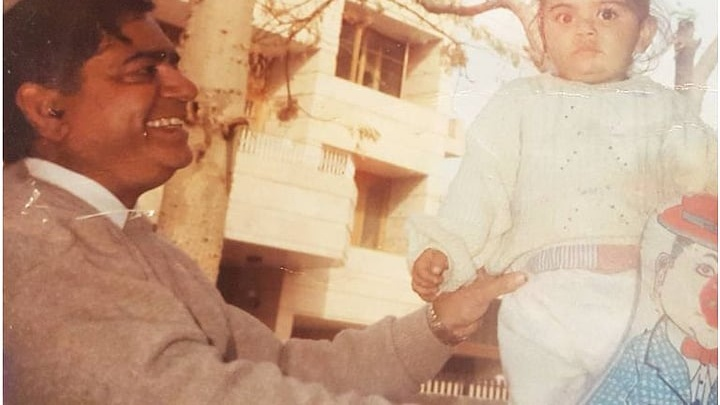

ERA 01 // GENESIS
LOC: WEST DELHI

ENTRY NO. 001
1990s
CHILDHOOD & DELHI ROOTS
A boy with a bat in Paschim Vihar. Supported by his father Prem Kohli, whose quiet belief and dawn scooter rides ignited the fire of #18.